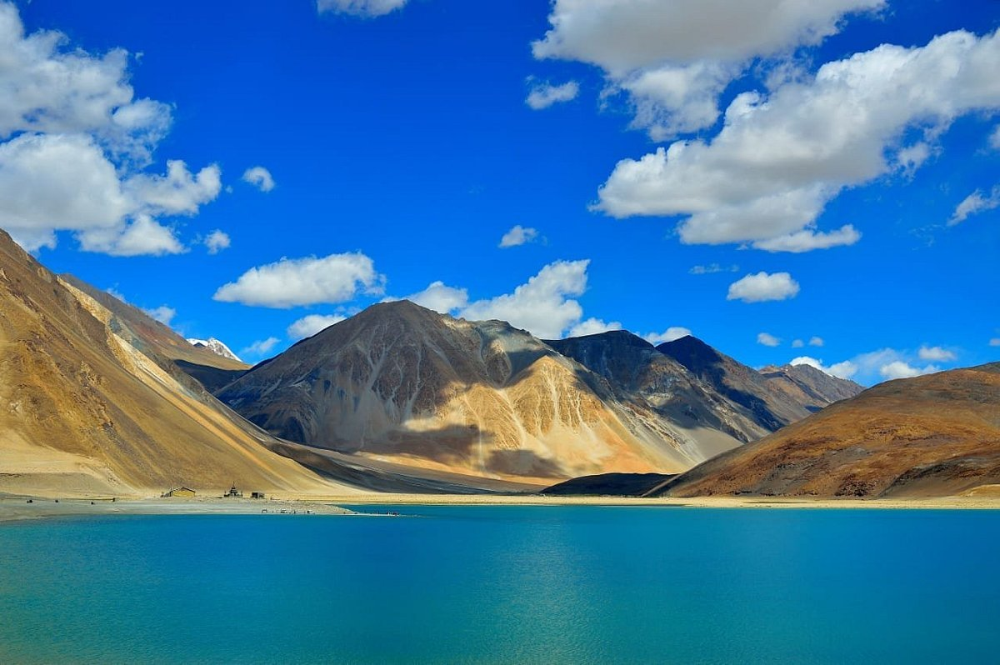

Ladakh
"Land of High Passes"
Quick Facts
Popular Tourist Attractions
Pangong Lake
Crystal blue lake extending into China, a sight to behold.
Magnetic Hill
Optical illusion of vehicles seemingly moving uphill on their own.
Leh Palace
A 17th-century palace offering panoramic views of Leh.
Nature & Wildlife
Home to Hemis National Park — the largest national park in South Asia and a sanctuary for snow leopards.
Famous Personalities
- Sonam Wangchuk: Engineer, innovator, and education reformist.
- Tsewang Namgyal: Indian diplomat and ambassador.
- Thinlas Chorol: Renowned trekking guide and women’s rights advocate.
Local Handicrafts
Known for woolen garments, pashmina products, thangka paintings, and handmade pottery.
Climate
Cold desert climate with extreme winters and dry summers. Temperature drops to -30°C in winter.
Culture & Festivals
Festivals
Major festivals include Hemis, Losar, and Ladakh Festival featuring mask dances and rituals.
Food
Popular dishes are Momos, Thukpa, Skyu, and butter tea.
Dance & Music
Rich Buddhist music and dance traditions like Cham dance are prominent.
Did You Know? Ladakh is home to the world’s highest motorable road at Khardung La Pass.
Note: Information may be subject to updates. Kindly notify us of any discrepancies.